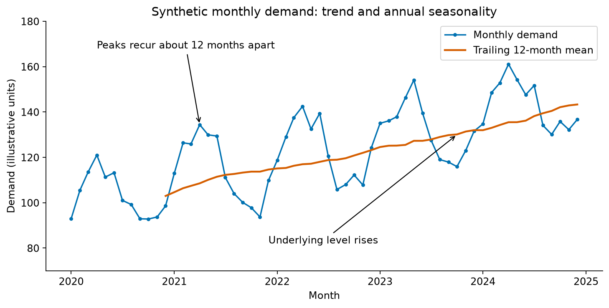
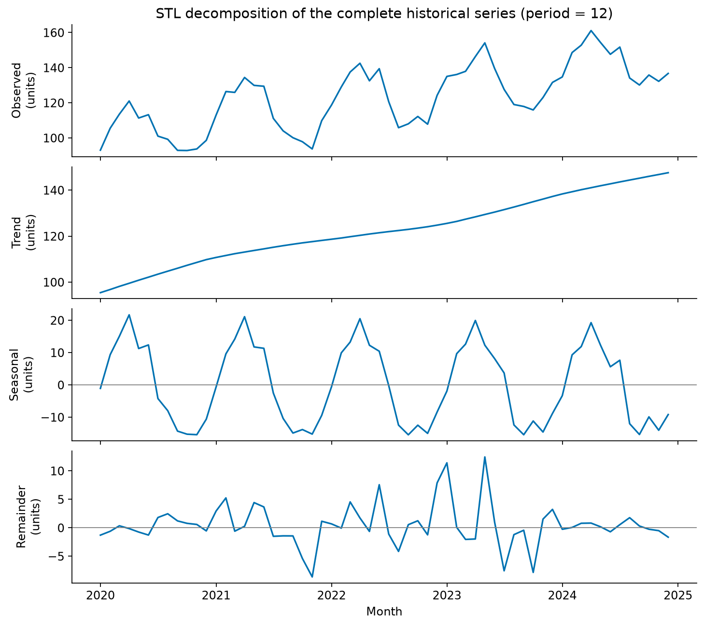
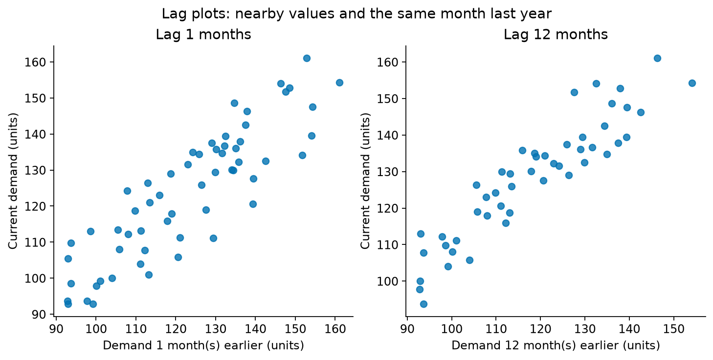
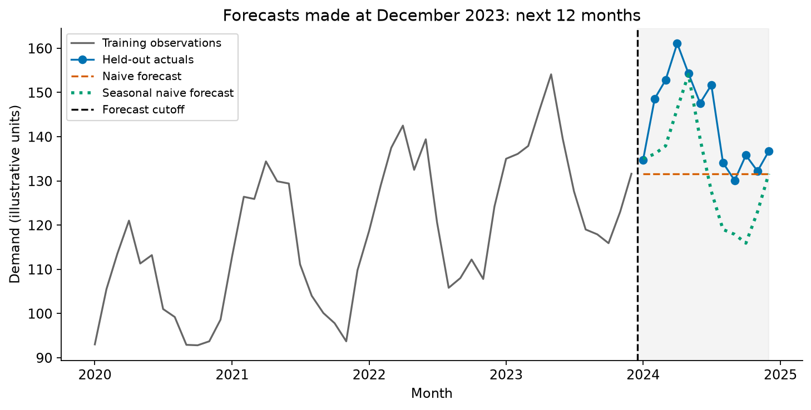

08 Introduction to Time Series Analysis and Forecasting#
Big Idea#
Time changes what counts as a useful prediction. A model that has seen next month’s demand cannot fairly claim to forecast it. Before choosing a forecasting method, we need to understand the time axis, recognize patterns, and decide what information would actually be available when a decision is made.
This chapter connects the visual reasoning of Week 03 and model evaluation of Week 04 to temporal data. The goal is to explain a simple forecast and judge whether its evaluation is credible. Advanced forecasting methods belong in the separate Time Series course.
Reading guide: Allow 35–45 minutes, including interpreting the four figures and answering the self-checks. Executing the Python examples is optional and takes additional time. Read the examples for their purpose rather than memorize function names.
By the end, you should be able to:
distinguish time series from independent observations and identify frequency, trend, seasonality, cycles, and irregular variation;
prepare a datetime index, check ordering and intervals, and interpret time plots, rolling summaries, and resampling;
explain decomposition and interpret lagged relationships and autocorrelation;
implement naive and seasonal naive baselines, evaluate chronologically with MAE/RMSE, and recognize leakage, uncertainty, and unsupported forecast claims.
8.1 What Is Time Series Data?#
A time series records a quantity over time: daily emergency-department arrivals, hourly electricity use, monthly product demand, or an asset’s trading-day closing price. A pandas Series stores one variable; a datetime index attaches a time to each value. A DataFrame can hold several variables or several entities’ series.
The defining feature is that temporal order has meaning. Adjacent observations may depend on similar conditions. Shuffling observations destroys the sequence needed to ask what followed what. A histogram can summarize the distribution of monthly sales, but it cannot show whether a high-sales month came before or after a promotion.
Frequency is how often observations are recorded. Granularity is the level of detail represented by an observation. A timestamp labeled January 1 may represent the whole January total, rather than a measurement at midnight. Record that distinction in the data description. A monthly series with annual seasonality has 12 observations per seasonal cycle; a quarterly series has four.
Do not confuse observation frequency with seasonal period. “Monthly” describes the spacing; “annual seasonality” describes repetition across 12 months. A series need not be seasonal just because it has regular timestamps.
Application |
Quantity and interval |
Decision supported |
|---|---|---|
Retail |
Monthly units sold |
Inventory purchasing |
Healthcare |
Daily arrivals |
Staffing and capacity |
Finance |
Trading-day closing prices |
Risk monitoring |
Operations |
Hourly electricity demand |
Capacity scheduling |
The horizon must fit the decision: tomorrow’s staffing and next year’s expansion are different problems. Forecasting estimates what may happen; planning chooses what to do about it. Predictability depends on the stability of the process and available information, so a historical pattern alone is insufficient evidence for a future claim. See the forecasting introduction.
Our running example#
We use synthetic monthly demand, 60 observations from January 2020 through December 2024, in illustrative units. The data combine a rising level, a repeating annual pattern, and random variation. They are constructed for teaching, not measured sales or evidence about any real business.
Download the local CSV. All four figures use this same series. The data and figures can be regenerated with the Python script; no data download is required when running it.
8.2 Understanding Temporal Patterns#
Start with a time plot. Read the horizontal axis, units, and coverage before explaining the shape.
Level: the general magnitude of the series. Demand around 100 units presents different capacity needs from demand around 10,000.
Trend: a sustained increase or decrease. A trend can be curved, change direction, or stop; it need not be a straight line.
Seasonality: a pattern recurring at a known calendar interval, such as a weekly rhythm in daily arrivals or annual variation in monthly demand.
Cyclical variation: rises and falls without a fixed calendar period, such as expansions and contractions of business activity.
Irregular variation: fluctuations left unexplained by the patterns we have identified. These may include random noise, unusual events, or measurement problems.
A peak is not enough to establish seasonality. Look for repeated peaks at comparable calendar positions over several cycles, and check a plausible explanation. A single surge could be a special event. Likewise, a cycle can last several years without having a reliably repeating duration.

Fig. 11 Synthetic monthly demand and a trailing 12-month average. The annotations highlight annual repetition and a rising underlying level. The average appears only after 12 observations and trails changes in the series.#
Read the figure: Peaks return about a year apart, while later troughs generally sit above earlier troughs. A forecast that repeats last month may miss the seasonal rhythm; repeating last year’s month may miss growth. Neither observation proves that the next year will behave the same way.
Pause: Imagine the store closes for two months. Would the resulting dip be ordinary seasonality, or would you need additional context? The label should follow the evidence, rather than the shape alone.
8.3 Exploring Time Series with Python#
Run the following snippets in order in one notebook. Use a standard environment with NumPy, pandas, matplotlib, and statsmodels. Colab normally provides these packages; if statsmodels is absent, install it using your environment’s package manager. No forecasting framework is needed.
For a fresh notebook, this cell recreates the local CSV’s values in memory:
import numpy as np
import pandas as pd
import matplotlib.pyplot as plt
rng = np.random.default_rng(8)
dates = pd.date_range("2020-01-01", periods=60, freq="MS")
t = np.arange(60)
demand = np.round(100 + 0.8 * t + 20 * np.sin(2 * np.pi * t / 12)
+ rng.normal(0, 4, 60), 1)
df = pd.DataFrame({"month": dates, "demand": demand})
MS means month start. These labels represent monthly quantities; the numerical units remain illustrative. The fixed random seed makes the example reproducible. You do not need to learn the generation formula: it supplies a controlled example with recognizable patterns.
Datetime indexes and ordering#
df["month"] = pd.to_datetime(df["month"])
s = df.set_index("month")["demand"].sort_index()
assert s.index.is_unique, "Resolve duplicate months before analysis"
s = s.asfreq("MS")
print(s.index.min(), s.index.max(), s.isna().sum())
The example covers January 2020–December 2024 and has zero missing values. sort_index() puts time in chronological order. asfreq("MS") establishes a monthly grid and exposes missing months as missing values; it does not estimate them. Check the timestamp convention first: month-end observations would require an appropriate month-end grid instead.
Duplicate timestamps require interpretation. Several transactions in a month may need aggregation, while repeated copies of the same monthly total need deduplication. Neither should be silently discarded. For irregular event data, choose a meaningful interval and aggregate events before treating row positions as equal time steps. With hourly measurements, time zones and daylight-saving changes can also affect intervals. The pandas time-series guide documents these operations.
Time plots and rolling averages#
ax = s.plot(figsize=(8, 3), label="Monthly demand")
s.rolling(12).mean().plot(ax=ax, label="Trailing 12-month mean")
ax.set(xlabel="Month", ylabel="Demand (illustrative units)")
ax.legend()
plt.show()
A trailing average uses the current and previous 11 months. It smooths short-term variation but reacts slowly to changes. It is a summary of the past, not a prediction of the next observation. A centered average uses observations on both sides of a date; that can be useful for describing history but unavailable in real time.
Resampling and missing periods#
quarterly_total = s.resample("QS").sum(min_count=3)
print(quarterly_total.head())
QS groups observations into calendar quarters labeled by their starting date. Summing is appropriate for monthly demand quantities; averaging would be appropriate for something like monthly average temperature. min_count=3 requires three observed months before reporting a quarterly total. Otherwise, a missing month could produce a deceptively low total.
Changing the interval changes the question. Quarterly totals simplify the display but hide within-quarter variation. Compare units and aggregation rules before comparing series.
A missing value is not automatically zero demand. It may mean a reporting failure, a closure, or an absent measurement. Investigate the reason, document the treatment, and check how the choice affects conclusions. Interpolation can help exploration, but filling a training gap using later test observations leaks future information. The complete teaching series needs no filling.
8.4 Time Series Decomposition#
Decomposition separates an observed series into estimated components so we can inspect its structure. The legacy Brownlee reading introduces this idea and emphasizes skepticism about automatic results [Bro21].
An additive representation is:
Observed = trend + seasonal component + remainder.
The trend component includes the underlying level and slow movement; a separate level panel is not required. The remainder is whatever the estimated trend and seasonality leave behind. It may still contain structure, unusual events, or model error, so “remainder” is safer than assuming it is pure noise.
Additive decomposition is useful when seasonal swings are roughly constant in original units. If seasonal swings grow proportionally with the level, a multiplicative representation may be more useful:
Observed = trend × seasonal factor × remainder factor.
For example, a recurring increase of about 20 units suggests additive seasonality; a recurring increase of about 20% suggests multiplicative seasonality. This choice concerns how components combine. Additive decomposition can have a curved trend, and multiplicative seasonality still has a fixed seasonal period.
STL in Python#
STL means Seasonal and Trend decomposition using Loess. It estimates smooth trend and seasonal components; we focus on interpreting the result rather than the smoothing algorithm. See the STL documentation.
from statsmodels.tsa.seasonal import STL
assert not s.isna().any(), "STL needs a complete series here"
components = STL(s, period=12, robust=True).fit()
components.plot()
plt.show()
period=12 specifies annual repetition in monthly observations. It does not mean that all monthly series have annual seasonality. robust=True reduces the influence of unusual observations on the estimated trend and seasonal components; it does not remove those observations or prove they are errors. STL is additive; strictly positive data can sometimes be analyzed on a log scale to represent multiplicative behavior.

Fig. 12 STL applied to the complete historical series. Adding the bottom three components reconstructs the observed series. Panels have different vertical scales, so compare their labeled values rather than their apparent heights.#
Read the figure: The trend rises, seasonal deviations alternate above and below zero, and the remainder is smaller but not identically zero. A negative seasonal value means demand is below the estimated trend for that month; it does not mean negative demand. The components are estimates, not explanations of why demand changed.
Decomposition depends on the chosen period and smoothing settings. Endpoint estimates can change when new observations arrive, and a short history may provide weak evidence for a stable seasonal pattern. Multiple seasonal rhythms and calendar effects require additional care. Decomposition itself does not generate a future forecast. This full-history plot is descriptive; a forecast pipeline must estimate any decomposition used in prediction on training data only.
8.5 Autocorrelation and Lagged Relationships#
A lag looks backward by a specified number of observations. On our complete monthly grid, lag 1 means the previous month and lag 12 means the same month in the previous year. On an irregular grid, 12 rows might not mean 12 months.
A lag plot pairs current values with earlier values. Points following an upward diagonal suggest that high earlier values tend to accompany high current values. A downward pattern suggests an inverse relationship. A diffuse cloud suggests a weak relationship at that lag, though nonlinear dependence may still exist.
pd.plotting.lag_plot(s, lag=12)
plt.xlabel("Demand 12 months earlier (units)")
plt.ylabel("Current demand (units)")
plt.show()

Fig. 13 Lag 1 and lag 12 on the same historical series. Both growth and annual seasonality contribute to the relationships; the plots do not isolate a causal effect.#
Autocorrelation summarizes linear association across time. The autocorrelation function (ACF) reports correlations at different lags. Positive values indicate that observations separated by that lag tend to move together; negative values indicate opposing movement. Lag zero compares the series with itself and equals one.
A slowly declining ACF can reflect trend; repeated high correlations at seasonal lags can reflect seasonality. Therefore, a strong lag-12 relationship alone does not prove annual seasonality. Combine it with the time plot and calendar context. We do not use ACF/PACF patterns to select ARIMA parameters in this introductory chapter.
Pause: Could common growth produce a strong lag relationship even without a direct influence of last year’s demand on this year’s demand? Yes. Correlation is evidence of association, not a mechanism.
8.6 Introduction to Forecasting#
A forecast predicts observations beyond the available history. The forecast origin is the cutoff where information stops; the horizon is how far ahead we predict. At the end of December 2023, January 2024 is horizon 1 and December 2024 is horizon 12.
Always establish a simple baseline before trying a complicated model. A naive forecast repeats the most recent observation at every future step. A seasonal naive forecast repeats the most recent observation for the same seasonal position. For a 12-month horizon, it copies the previous year’s 12 months.
train, test = s.iloc[:-12], s.iloc[-12:]
naive = pd.Series(train.iloc[-1], index=test.index, name="Naive")
seasonal_naive = pd.Series(train.iloc[-12:].to_numpy(),
index=test.index, name="Seasonal naive")
forecasts = pd.concat([naive, seasonal_naive], axis=1)
Every predicted value comes from train; test.index supplies dates, not future demand. Converting the previous year’s values to an array assigns them to the new dates. Without that step, pandas would align old timestamps rather than matching seasonal positions.
For horizons beyond one season, seasonal naive repeats the last complete seasonal cycle as often as needed. Our code intentionally handles exactly 12 months. Updating the baseline after each new observed month would be a different forecasting setup and should be evaluated separately.

Fig. 14 Two 12-month forecasts made using only history available through December 2023. Held-out actuals are shown afterward for evaluation; they did not supply forecast values.#
Read the figure: Seasonal naive captures much of the annual shape but tends to underpredict because it repeats a lower historical level. The flat naive forecast misses the seasonal rhythm. More complex methods must earn their additional effort by improving credible out-of-sample performance.
Exponential smoothing, ARIMA, and models using explanatory variables offer other ways to represent changing patterns. Their tuning and implementation are beyond this week’s scope.
8.7 Evaluating Forecasts#
Keep time moving forward#
A chronological holdout asks a realistic question: using information available through the cutoff, how well could we predict later observations? The test period should cover the horizon relevant to the decision. Here it includes a complete annual cycle, so an easy seasonal period cannot dominate the comparison.
Random splitting can let a model learn from later observations while being evaluated on earlier ones. That is misleading for forecasting future demand, even when training and test rows do not overlap. Set aside the most recent period and keep it untouched while selecting methods. When comparing many choices, use earlier chronological validation windows for selection and reserve a final test period for reporting.
A rolling-origin evaluation repeats the process at several historical cutoffs: train on the past, predict a future window, advance the cutoff, and repeat. This checks whether performance depends on one lucky year. It is a useful next step, not a requirement for the introductory example.
Recognize temporal leakage#
Leakage happens when future information enters the process used to make an earlier prediction. Check the whole workflow, not only the final model:
Choice |
What goes wrong |
Better approach |
|---|---|---|
Fit decomposition or scaling before the split |
Test values affect estimated components or parameters |
Fit on each training window |
Center a rolling feature at the target date |
Later observations enter the feature |
Use only available past values |
Fill a training gap from later test observations |
Future measurements repair the past |
Use an appropriate training-only policy |
Use realized future sales as a predictor |
The quantity is unknown at forecast time |
Audit predictor availability |
Tune repeatedly on the final test year |
The reported score influences selection |
Use earlier validation windows |
A trailing mean containing today’s demand is also unavailable if today’s demand is the target being forecast before it is observed. “Past-looking” code is not sufficient: ask when each value became known. Some future predictors, such as scheduled holidays, are known in advance; others, such as realized weather, require their own forecasts. Reporting delays can make even a dated observation unavailable at the cutoff.
MAE and RMSE#
A forecast error is actual minus predicted. Positive errors indicate underprediction; negative errors indicate overprediction. Historical fitted residuals and held-out forecast errors answer different questions: fitting the past well does not guarantee predicting unseen months well.
MAE is the average absolute error. RMSE is the square root of the average squared error. Both use the target’s units; RMSE gives more weight to large misses. Signed errors can cancel, so averaging them alone does not measure typical error magnitude.
errors = forecasts.rsub(test, axis=0) # actual minus predicted
scores = pd.DataFrame({
"MAE": errors.abs().mean(),
"RMSE": np.sqrt(errors.pow(2).mean())
})
print(scores.round(2))
Forecast |
MAE (units) |
RMSE (units) |
|---|---|---|
Naive |
11.96 |
15.40 |
Seasonal naive |
11.37 |
13.31 |
The MAEs are close: a small difference at one cutoff is weak evidence for a general ranking. These are results for this constructed example and this cutoff, not guarantees for real demand. A seasonal-naive MAE of about 11 means an average absolute miss of about 11 illustrative units across the held-out months. It does not mean every error is 11 units, 11%, or within an 11-unit interval. Comparing errors across quantities measured in different units requires additional care.
To communicate the result, name the cutoff, horizon, baseline, metric, and limitation: “Using history through December 2023, seasonal naive had slightly lower MAE and lower RMSE than naive on the next 12 months, but it generally missed the rising level. We need other historical cutoffs before recommending it for operations.”
Uncertainty and judgment#
A point forecast is one estimate, not a guarantee. A prediction interval expresses a range of plausible future observations under a model and its assumptions. It differs from an interval for an estimated mean. Forecast uncertainty often increases with horizon, but its behavior depends on the model and process.
Our baseline cells calculate point forecasts only. RMSE is not automatically a valid prediction-interval width, and the shaded region in the figure marks the test period, not uncertainty. Building and checking calibrated intervals requires additional work. Unexpected closures, policy changes, or shifts in demand may invalidate historical patterns and widen the practical uncertainty.
When an AI tool produces a forecast or explanation, ask for the data, cutoff, horizon, runnable code, baseline comparison, and evaluation procedure. A fluent explanation and a smooth forecast line are not evidence of accuracy. Verify claimed numbers, inspect leakage, and distinguish pattern description from a causal claim.
Note
Optional modern context: Machine-learning models can use lagged observations and predictors. Foundation forecasting models transfer patterns learned across many series. Neither approach removes the need to audit data availability, compare baselines, and evaluate future periods. No additional library or implementation is required here. See the optional foundation-model reading below.
8.8 Key Takeaways#
Time order, intervals, and information availability are part of the analysis.
Trend, seasonality, cycles, and irregular variation help describe patterns; they do not guarantee future behavior.
Rolling summaries, decomposition, and lag plots answer different exploratory questions.
Naive baselines provide a meaningful starting point for forecast comparison.
Evaluate chronologically, report errors in their units, and communicate uncertainty and limitations.
Common misconceptions#
“Monthly frequency proves annual seasonality.” Repetition needs evidence across multiple years.
“Decomposition gives the true causes.” It estimates components under modeling choices.
“A large autocorrelation proves a causal effect.” Common trend and seasonality can produce association.
“A low historical fitting error means a good forecast.” Future observations require separate evaluation.
“An AI-generated forecast needs less validation.” Its evidence must meet the same standard.
Self-checks#
Your monthly series jumps from February to April. What must you check before treating lag 1 as “one month ago”?
Seasonal naive follows the timing of peaks but consistently underpredicts. Which historical pattern might it be missing, and what evidence would you inspect?
A colleague decomposes all five years, then splits the components into training and test periods. Why is the forecast evaluation compromised?
Two forecasts have similar MAE, but one has a much larger RMSE. What might their errors look like, and how could that affect a staffing decision?
Check your reasoning
Establish a regular monthly grid, investigate the absent March observation, and distinguish missing reporting from an actual zero. A one-row shift otherwise spans unequal calendar time.
A rising level or trend is plausible. Inspect the time plot and signed held-out errors; do not assume growth is the only possible cause.
Test observations influenced the decomposition used to construct training components. Estimate predictive preprocessing on training data only.
The larger RMSE suggests more extreme misses. Inspect individual months and the consequences of understaffing, rather than rank methods from one summary alone.
References and optional further reading#
The principal reference is Hyndman et al.’s Forecasting: Principles and Practice, the Pythonic Way [HAG+26]. This chapter adapts selected concepts to familiar Python libraries and an original teaching example.
Chapter 1: Getting started: decisions, predictability, and forecasting workflow.
Chapter 2: Time series graphics: time plots, seasonal patterns, lag plots, and autocorrelation.
Chapter 3: Time series decomposition: components and STL.
Chapter 5: The forecaster’s toolbox: simple methods, uncertainty, and forecast evaluation.
Optional: Chapter 16, Foundation forecasting models, accessible from the book contents. Read for context only; implementation is beyond this chapter.
Brownlee (2021), supplied Chapter 12, Decompose Time Series Data [Bro21]: legacy background on decomposition. Use the current examples here instead of its older pandas API.
pandas time-series documentation and statsmodels STL API: optional implementation reference.